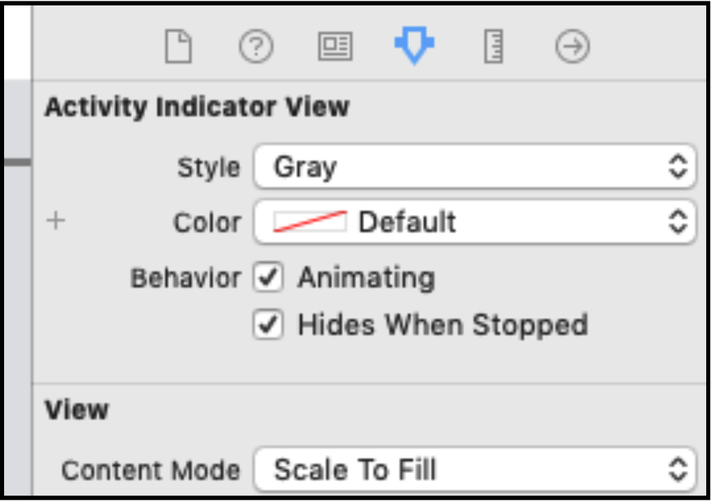

Справжня ефективність операцій проявляється тоді, коли ви дозволяєте OperationQueue обробляти ваші операції. Як і у випадку з DispatchQueue GCD, клас OperationQueue використовується для управління операціями які можуть виконуватися одночасно.
В OperationQueue можна передати завдання трьома різними способами:
- З допомогою операції.
- З допомогою замикання.
- Через передачу масиву операцій.
Якщо ви реалізували проект з попередньої глави, ви побачили, що операція сама по собі є синхронним завданням. Для того, щоб отримати всі переваги паралелізму операцій, вам потрібно додати їх в OperationQueue.
Управління чергою операцій
Черга операцій (operation queue) виконує готові (ready) операції відповідно до QoS. Після того, як ви додали операцію в чергу, вона буде виконуватися до тих пір, поки завершиться або буде скасована.
Після того, як ви додали операцію в OperationQueue, ви не зможете додати цю ж операцію в будь-яку іншу OperationQueue. Операцій є атомарними завданнями, тому, інколи, їх перетворюють в підкласи, щоб при необхідності їх можна було виконати кілька разів.
Очікування завершення
Під капотом OperationQueue, реалізований метод waitUntilAllOperationsAreFinished. Виклик цього методу блокує поточний потік, а це означає, що ви ніколи не повинні викликати цей метод в main потоці.
Якщо вам потрібен цей метод, то вам слід налаштувати DispatchQueue як послідовну. Якщо вам не потрібно чекати завершення всіх операцій, а потрібно тільки набір операцій, то замість цього ви можете використовувати метод addOperations(_: waitUntilFinished :) в OperationQueue.
Якість обслуговування QoS
OperationQueue дещо схожа на DispatchGroup в тому сенсі, що ви можете додавати операції з різними QoS, і вони будуть виконуватися згідно з відповідним пріоритетом. Якщо вам потрібно пригадати більше інформації по QoS, то поверніться до глави 3 «Черги і потоки».
За замовчуванням QoS для черги операцій - .background, але при необхідності ви можете змінити властивість черги операцій qualityOfService на те значення, яке вам потрібно.
Призупинення черги
Ви можете призупинити чергу відправки(dispatch queue), встановивши значення властивості isSuspended як true. Запущені операції будуть продовжувати виконуватися, але нові додані операції НЕ будуть виконуватися, поки ви не зміните isSuspended назад на false.
Максимальна кількість операцій
Іноді вам потрібно обмежити кількість операцій, які виконуються одночасно. За замовчуванням в черзі відправки буде одночасно виконуватися стільки завдань, скільки ваш пристрій здатний обробити. Якщо ви хочете обмежити це число, просто встановіть властивість maxConcurrentOperationCount в черзі відправки. Якщо ви встановите maxConcurrentOperationCount на 1, то ви фактично створите послідовну чергу.
Базова DispatchQueue
Перш ніж додавати будь-які операції в OperationQueue, ви можете вказати існуючу DispatchQueue як underlyingQueue. Якщо ви це зробите, майте на увазі, що QoS черги відправки буде перевизначати будь-яке значення, встановлене для QoS черги операцій.
Note: Не вказуйте основну чергу в якості базової черги!
Виправляємо попередній проект
У попередньому розділі ви налаштували операцію для управління tilt shift(фотоефект), але вона виконувалася синхронно. Тепер, коли ви знайомі з OperationQueue, пропонуємо вам змінити цей проект так, щоб він правильно працював. Ви можете продовжити роботу з існуючим проектом або відкрити Concurrency.xcodeproj з прикріплених матеріалів до цієї глави.
UIActivityIndicator
Перша зміна, яку варто зробити - це додавання UIActivityIndicator, щоб вказати користувачеві, що щось відбувається. Відкрийте Main.storyboard і виберіть Tilt Shift Table View Controller. Додайте індикатор активності в центр зображення і розсташуйте його в центрі по вертикалі та горизонталі.
У Attributes inspector відзначте « Animating» і « Hides When Stopped».
Відкрийте PhotoCell.swift. Додайте новий @IBOutlet з ім'ям ActivityIndicator і зв'яжіть його з нещодавно доданих індикатором активності в storyboard:
Потім додайте в PhotoCell наступну обчислювану властивість(computed property):
Оновлення таблиці
Перейдіть до TiltShiftTableViewController.swift. Щоб додати операції в чергу, вам необхідно її створити. Додайте в початок класу наступну властивість:
Потім ввесь код в tableView (_: cellForRowAt :) між створенням зображення і поверненням cell наступним чином:
Замість того, щоб вручну викликати запуск операції, додайте її в чергу, яка буде і запускати її та завершувати. Крім того, за замовчуванням черга працює в фоновому режимі, тому ви більше не будете блокувати main потік.
Коли операція завершується, викликається completionBlock без аргументів. Тепер потрібно відправити свій код назад в main потік. Якщо ви можете отримати посилання на cell (якщо вона не була прокручена), то вам потрібно виключити activity indicator і оновити зображення.
Якщо ви додасте операцію в чергу, то вам більше не потрібно буде викликати op.start ().
Запустіть додаток і спробуйте знову проскролити таблицю.
Тепер, коли ваш код працює в асинхронному режимі, прокрутка таблиці стала набагато плавнішою. Хоча така зміна не робить нічого для підвищення продуктивності коду, але вона гарантує, що UI не буде заблокований.
Ви можете подумати: «Чим це відрізняється від того, щоб робити це з GCD?» Прямо зараз різниці немає. Але в наступних декількох розділах ви розширите можливості операцій, і причина змін стане ясною.
Який наступний крок?
Таблиця в даний час завантажує і фільтрує кожне зображення кожного разу, коли відображається клітинка (cell). Подумайте, як ви можете реалізувати кешування, щоб підвищити продуктивність.
Проект просувається добре, але він використовує статичні зображення. У наступному розділі ви познайомитеся з мережевими операціями.